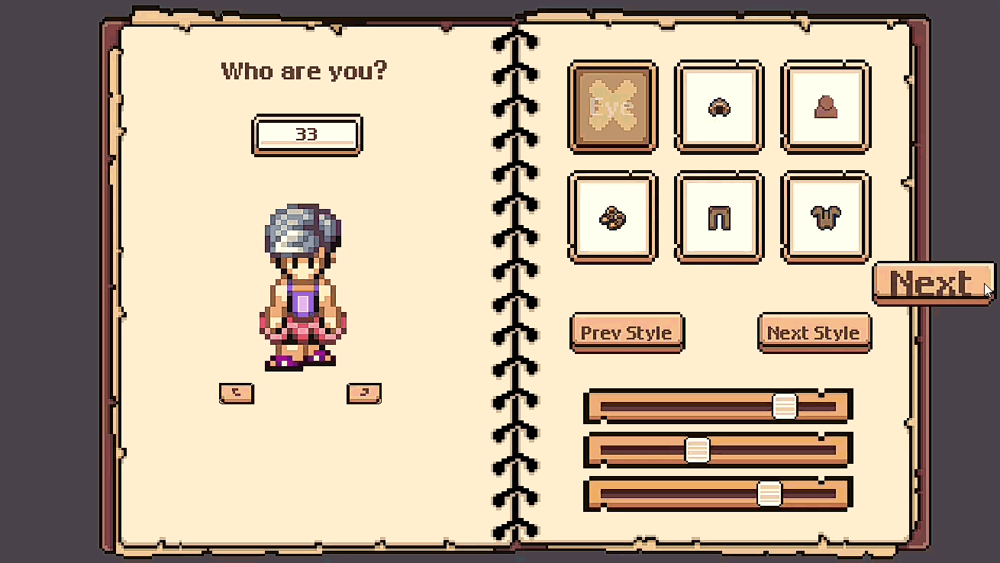
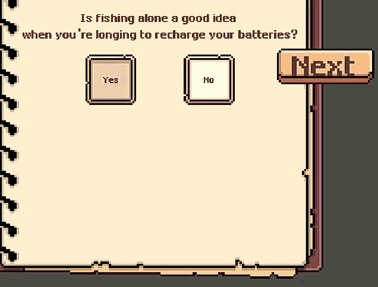
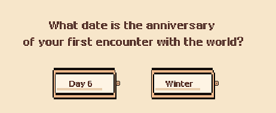
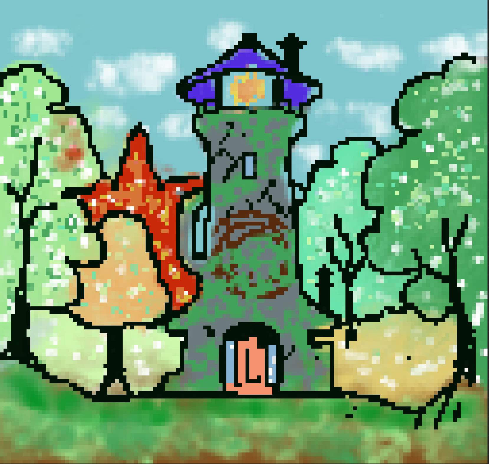

Devlog #2: 欢迎来到“出生地”——会呼吸的捏人系统
大家好！《Back to Thawing Valley》的 Devlog #2 终于来了！
在过去的几周里，我们集中火力完成了一个至关重要的系统：角色的“出生地”——多页捏人系统 (PlayerSetup.tscn)。
我们希望它不只是一个功能，而是更像在翻阅一本关于你自己的书，开启你在山谷的故事序章。
目前，外观页（Page 1）的功能已经敲定。我们未来计划逐步扩充更多的服装和外观选项！
核心交互
这一版捏人系统的核心是让 UI 变得更“智能”。在问卷页，你可以自由选择你的“家人”，无论你们是否有血缘。
当然啦，我们也没忘记独狼玩家！
如果你选择不邀请任何人...系统会“读懂”你的选择，并给你一个特殊的反馈。我们希望通过这些小细节让交互变得更有温度。

风味与沉浸感：你的独特性
我们加入了许多“风味”问题，希望能照顾到每个人的独特性。
也许你更喜欢深夜钓鱼，而不是清晨耕种？

另外，希望你喜欢钓鱼 >_<
让我们知道你的生日，也许在山谷里会有人给你悄悄送上礼物呢！
仍在摸索的美术...
除了代码，我也在努力提升游戏的美术风格！
虽然还拿不出手，但也想分享一下最近画的两张练习图。它们不一定会出现在最终游戏中，但希望能看到自己的进步！

技术与打磨
当然，这个冲刺也伴随着大量的 Bug 修复和底层优化。
我们重构了 UI 布局，彻底解决了 F6 预览时的相机 current 属性覆盖问题（之前称为“相机偏移 Bug”），并优化了场景树的渲染顺序，修复了按钮在 NinePatchRect (书本背景)下无法被点击的遮挡问题。
虽然这些都是玩家看不见的工作，但它们是保证系统流畅运行的基础。
下一步：开垦！
随着捏人系统的核心功能尘埃落定，我们终于可以踏入山谷，开始实现真正的游戏循环了！
下一个冲刺（Devlog #3）的目标是：
让玩家可以挥动锄头，并播下第一颗种子！
感谢你的关注，我们下次见！